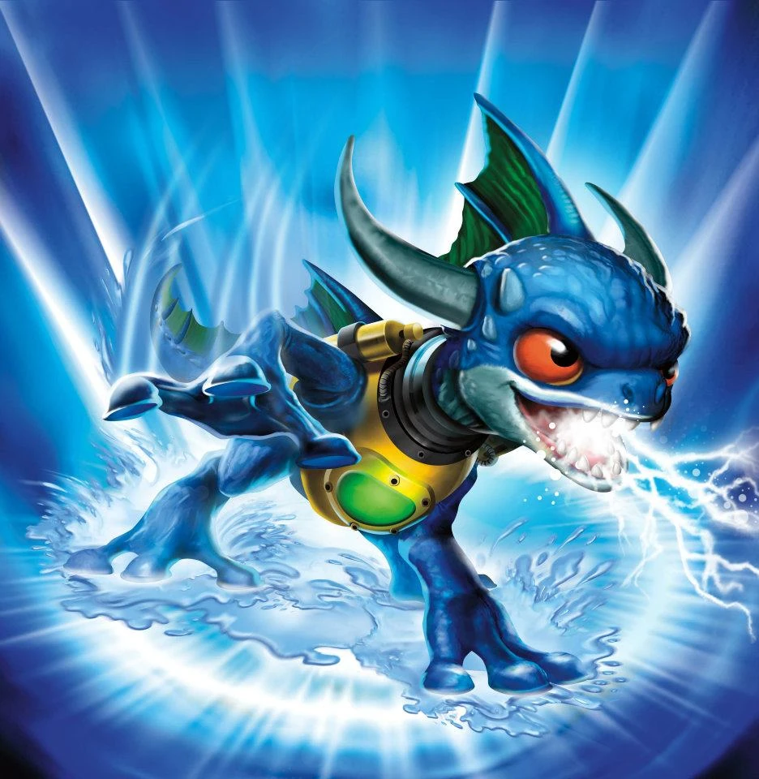
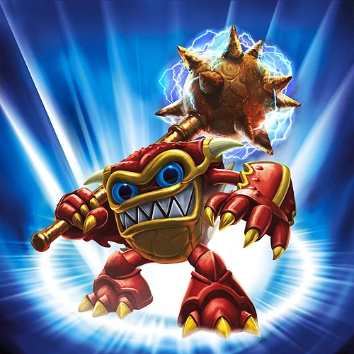
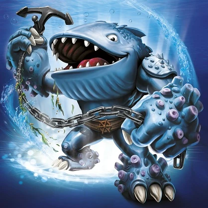
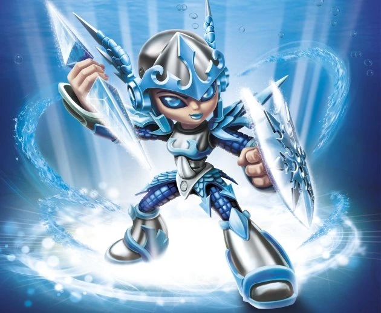
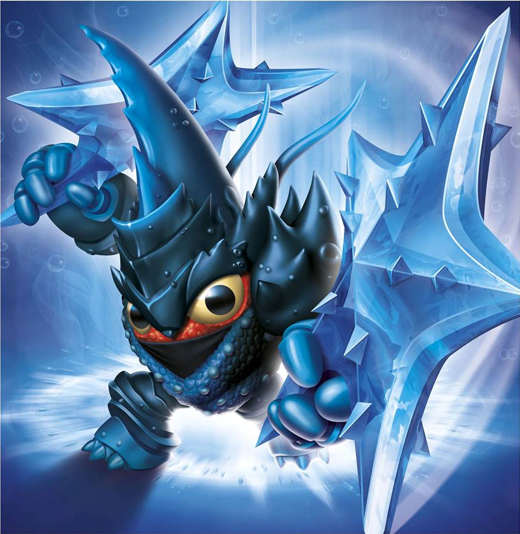
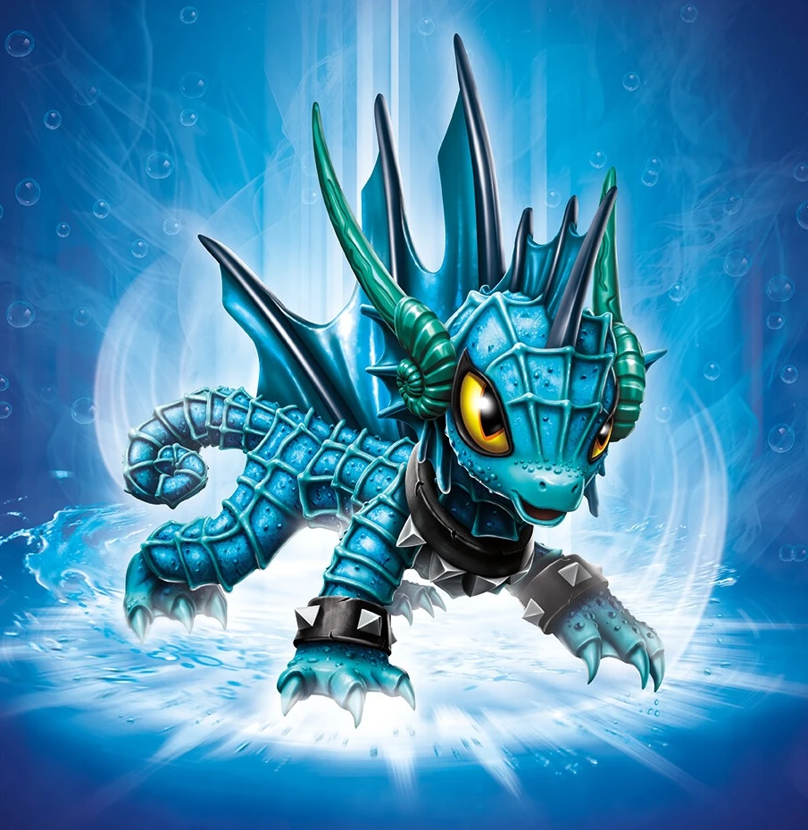
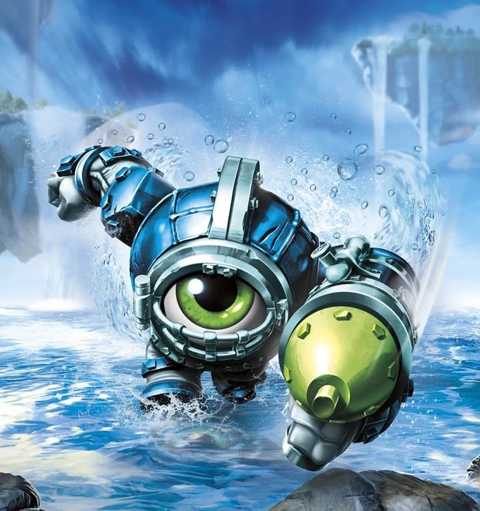
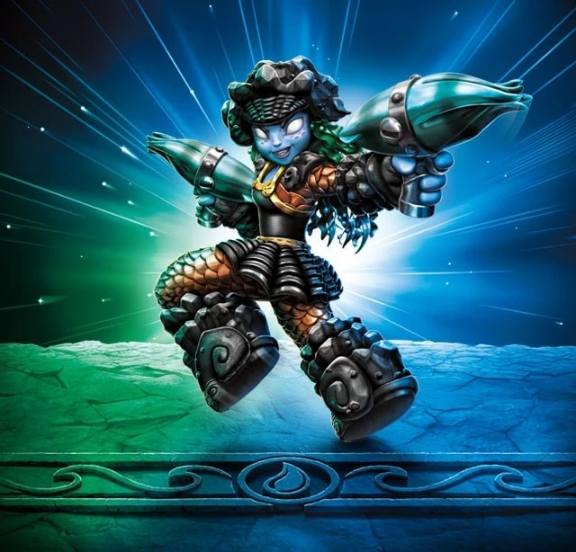

Zap
Zap was born into the royal family of water dragons, but a riptide washed him to a distant sea, where he was raised by electric eels. Growing up, he excelled in everything and even created a special gold harness that allows him to carry an endless electrical charge and shock things at a great distance. Zap also proved to be a gifted racer, outstripping any opponent... with the possible exception of the dolphins. With them, it became a good natured challenge to see who could keep up with Zap. But an electric current in his wake often reminded them who they were dealing with. Despite his mischievous streak, Zap grew to be a true protector of the seas and Skylands.

Wham-Shell
Wham-Shell was the long-standing king of a kingdom deep in the oceans of Skylands that for a long time lived peacefully. That is, until his underwater utopia was invaded by a legion of oil-drilling trolls that scattered his people to the wind. Armed with a powerful mace that had been handed down from one king to the next for generations, Wham-Shell defeated the greedy trolls and drove them away. Soon after, he joined the Skylanders to help defend against this type of atrocity ever happening again.
Gill Grunt
Gill Grunt was a brave soul who joined the Gillmen military in search of adventure. While journeying through a misty lagoon in the clouds, he met an enchanting mermaid. He vowed to return to her after his tour. Keeping his promise, he came back to the lagoon years later, only to learn a nasty band of pirates had kidnapped the mermaid. Heartbroken, Gill Grunt began searching all over Skylands. Though he had yet to find her, he joined the Skylanders to help protect others from such evil, while still keeping an ever-watchful eye for the beautiful mermaid and the pirates who took her.
Slam Bam
Slam Bam lived alone on a floating glacier in a remote region of Skylands, where he spent his time ice surfing, eating snow cones, and sculpting amazing ice statues. It was a peaceful life, until Kaos destroyed the glacier, stranding Slam Bam on an iceberg that drifted through the skies for days. He awoke on Eon’s Island, where he was taken in and trained to become a Skylander. Now his ice sculptures serve as a frosty prison for any evil-doer that gets in his way.

Thumpback
Thumpback was once a crew member of The Phantom Tide, the most fearsome pirate ship in all of Skylands. But the actual pirating part about being a pirate didn't interest Thumpback so much as the benefits that came with traveling on a large ship. After all, his real passion was fishing. But when his chance came to finally ensnare the most elusive creature in the sky - the Leviathan Cloud Crab - he was pulled over board and carried off into the horizon. This was actually quite fortunate, because sometime later The Phantom Tide and its entire crew were banished to the Chest of Exile. Thumpback’s pirating days were over, but his legend as one of the first Skylanders had only just begun.

Chill
Chill was the sworn guardian and personal protector of the Snow Queen. As captain of the queen's guard, her many heroic deeds earned her the respect of the entire ice kingdom. But when the Cyclops army began to expand their empire into the northern realms, the Snow Queen was taken prisoner during her watch and Chill has never forgiven herself for letting it happen. Ashamed and embarrassed, she left the Ice Kingdom behind and sworn never to return until she could reclaim her honor. Now as a member of the Skylanders, she remains courageous and strong, while always on the lookout for her lost queen.
Freeze Blade
When he was young, Freeze Blade's family moved from the Frozen Wastelands of Vesh to the Great Lava Lakes. As it turned out, this was a very difficult adjustment for Freeze Blade. Not only was he the sole one of his kind, it was also incredibly hot and there was no ice to skate on whatsoever. But over the years, he learned to fit in with the other fire-like creatures and even discovered he had a magical ability to ice skate on any surface... even bubbling lava. One day, while out setting a new frozen lava speed record, he came across Blast Zone, who had just been ambushed by some nasty Spell Punks. After Freeze Blade stepped in to defend him, Blast Zone was so impressed by his skill in battle that he introduced him to Master Eon, who invited him to join the Skylanders.
Wash Buckler
Wash Buckler was an orphan Mermasquid, who grew up on one of the roughest pirate ships in Skylands. While most pirates were interested in pillaging and plundering, Wash Buckler had other ideas for the future of pirating. Over the years, he earned the respect of his crew and eventually convinced his fellow pirates that they didn’t all need to be cantankerous bad guys. Thus, they set forward doing heroic deeds. Of course, this new good guy image did not sit well with other pirating crews, who attempted to sabotage Wash Buckler at every turn. But he was no ordinary pirate, and he defended his ship and his crew against the many attacking hordes. It was then that Master Eon took notice of Wash Buckler and asked him to join the Skylanders.
Rip Tide
Rip Tide was known far and wide as one of the best Aqua-Fighters in Skylands. He mastered a multitude of water techniques and astonished tournament spectators with his ability to adapt his fighting style to any opponent. Amongst his repertoire were Swordfish Fencing, Hammerhead Heaving, and even the rare Blubber Whale Wallop -- which he had used on numerous occasions in the legendary Rumble in the Reef. His unrivaled skill as a swordsman soon drew the attention of Master Eon. But when Kaos learned of this, he sent forth a legion of Squidface Brutes to stop Rip Tide before he could join the Skylanders... and everyone knows how that turned out, except for the Squidface Brutes, who after being knocked senseless can't remember a thing.
Punk Shock
Daughter to the most royal family in Wondrous Waters, Punk Shock never really accepted her role as an undersea princess. She preferred a much more exciting life - hunting with her electric crossbow and listening to super-charged music. After journeying to the outer reaches of her kingdom to find adventure, Punk Shock returned home to discover adventure had found her. The kingdom and its people were magically frozen by the Snow Trolls, who were there to steal valuable treasure. Punk Shock used her awesomely charged crossbow to single handedly defeat the Snow Troll army and melt the ice that trapped her kingdom. Gill Grunt heard of the battle and quickly recruited Punk Shock into the Skylanders.
Snap Shot
Snap Shot came from a long line of Crocagators that lived in the remote Swamplands, where he hunted chompies for sport. After rounding up every evil critter in his homeland, Snap Shot ventured out into the world to learn new techniques that he could use to track down more challenging monsters. He journeyed far and wide, perfecting his archery skills with the Elves and his hunting skills with the wolves. Soon he was the most revered monster hunter in Skylands – a reputation that caught the attention of Master Eon. It then wasn’t long before Snap Shot became the leader of the Trap Masters, a fearless team of Skylanders that mastered legendary weapons made of pure Traptanium. It was this elite team that tracked down and captured the most notorious villains Skylands had ever known!

Lob-Star
Hailing from the depths of the undersea kingdom of Star City, Lob-Star was the head chef of his own five-star restaurant, often cooking for the King Fish himself. However, few knew that Lob-Star had secretly been training in a mysterious art of fighting known only to a few crustaceans. For a while, Lob-Star was able to keep the peace while still keeping his hidden identity. But when a giant Leviathan threatened to swallow up Lob-Star’s guests and capture the King Fish himself, he had no choice but to swim into action. Calling on every trick his mysterious training had taught him, Lob-Star defeated the Leviathan and drove it out of Star City. For risking everything, Lob-Star was recruited by Master Eon to join the Skylanders. Now, as part of the Trap Team, he uses his powerful Traptanium Throwing Stars to serve up defeat to anyone who threatens Skylands!

Echo
Echo lived in an undersea kingdom that was built around an enormous oyster shell, and at its center was the Pearl of Wisdom. Every day water dragons from all around the kingdom would come to ask questions of the Pearl. Because this was a sacred ritual, anyone living near the Pearl were required to speak only in whispers. This was challenging for Echo, who lived directly next to it. She had a gift – and it was loud – and often got her in trouble. One day, a gang of sea horses known as the Aqua Jocks rode into town and claimed the Pearl for themselves. They cast an unbreakable bubble around it and began dragging it away with enormous chains. The nearby water dragons, who had been quiet for so long, were unable to even call for help. Then Echo appeared – and with her loudest sonar blast, she shattered the bubble and blew the sea horses out of the kingdom! Her heroic actions caught the attention of Gill Grunt, who recruited her as a Skylander. Now Echo sounds off against evil all throughout Skylands!
Flip Wreck
Most of the dolphins of Bottlenose Bay spent their days playing in the waves. However, Flip Wreck was different. Always the adventurous one, he took it upon himself to be a self-appointed protector of his undersea world. One day, while exploring an underwater graveyard of shipwrecks, he came across a massive Ice Viking ship that was still intact. Suddenly, a huge crew of Ice Vikings burst out from inside and began leading an attack on the unarmed dolphin residents. Flip Wreck took off at once and quickly fastened together armor, shield, and sword using pieces from the nearby wrecks. He then single-handedly defeated the Ice Vikings, who retreated never to be seen again. For his heroic actions, Flip Wreck was made a Skylander and now turns the tide against evil in Skylands!

Dive-Clops
Believe it or not, Dive-Clops is actually the twin brother of Eye-Brawl. When he was young, his bat-wings were blasted off by pirates while flying over the Swirling Sea, causing him to plunge into the abyss below. After rolling on the bottom for several days, he was discovered by an underwater civilization of Jelly Dwarves. They were instantly fascinated by the bizarre looking eyeball and took him back to their Corral Castle, where they built him a magnificent dive suit that would allow him explore the depths of the sea. But everything changed when Dive-Clops decided to venture to the mysterious Whirlpool of Destiny deep within the ocean. As he got closer, he suddenly felt pulled by its immense power, and reemerged to discover that thousands of years had passed! Now with his destiny before him as a member of the Skylanders, Dive-Clops lets the minions of Kaos know that there are many dangers of the deep!
Deep Dive Gill Grunt
Deep Dive Gill Grunt is the Superchargers counterpart of Gill Grunt in Skylanders Superchargers. His signature vehicle is the Reef Ripper.
King Pen
King Pen hails from a militaristic unit of penguins who protect the Cloudmelt Glaciers. During an epic battle, King Pen was trapped in an avalanche and had to take refuge in a nearby cave for the remainder of the winter season. During his solitude, he was visited by a mysterious Yeti Master, named Snow Wah, who began teaching him an ancient combat style known as “Flipper-Fu”. King Pen was already a skilled fighter, but the wise teacher helped him to understand the spiritual and philosophical nature of warfare, turning the penguin into an unstoppable force. When he finally emerged from the cave, tales of his newfound abilities spread far and wide. When Master Eon caught wind, he recruited King Pen into his top secret training program, where he quickly rose up the ranks to become the leader of the Skylander Senseis. Years later, King Pen returned to the site of the avalanche to thank his teacher, but no evidence of Snow Wah or the cave was ever found – leaving many to wonder if the Yeti had ever existed at all.

Tidepool
Long before she became a Sensei, Tidepool was an undercover agent for a top secret organization known as the Aqua Marines. However, one day she was betrayed by her superiors, who were part of an even more top secret organization intent on destroying Skylands. Using her spy training, Tidepool made it her personal mission to seek out every member of this evil shadow group and bring them to justice. This did not go unnoticed by Master Eon, who felt that someone of her caliber would be perfect to train new Skylanders as a Sensei of the Quickshot class. However, Tidepool was not easily convinced that she could even trust Eon and the Skylanders after being deceived by her last organization. To earn her trust, she requested that everyone pass a truth test that she would conduct. Thankfully, all of the members of the Skylanders Academy passed with flying colors... except for Flynn, who insisted that he was 50% Mabu and 50% enchilada sauce. Tidepool felt that he was 100% meathead.
Grave Clobber
Skylanders Trap Team
Grave Clobber was summoned by the Golden Queen as a last resort to defeat the Skylanders in The Golden Desert. Despite his threatening size, stature, and strength, Grave Clobber was bested and trapped.
After he was captured, the Skylanders took him to the Lair of the Golden Queen for his for his Villain Quest with Cali, though they had to get past her Spy Guys first. His quest was called "Where is Flynn?", where Cali tasked the mummy to rescue Flynn from the Queen's guards, who were holding him captive in a labyrinth. After rescuing the pilot, Grave Clobber was rewarded with Cali's thanks and a new outfit.
Skylanders Imaginators
Grave Clobber was once a great pharaoh who ruled the Golden Desert long ago. That was until his seven jealous brothers buried him in an underwater tomb while he was sleeping. But the remaining brothers still fought among themselves, and their infighting ultimately led to their kingdom falling apart and the family name being lost forever... almost. Because Grave Clobber eventually rose from his watery grave, and when he discovered what his brothers had done to their kingdom, he hunted each of them down and clobbered them. This was how he came to the attention of the Golden Queen, who now ruled the desert herself. She recruited Grave Clobber into her gang of Doom Raiders, but when the Skylanders defeated them once and for all, Master Eon thought that perhaps there was more to this mummy than meets the eye. He gave the old pharaoh a chance for redemption, and since nobody clobbered better than Grave Clobber, he was the perfect choice to be a Sensei trainer for the Brawler Class.